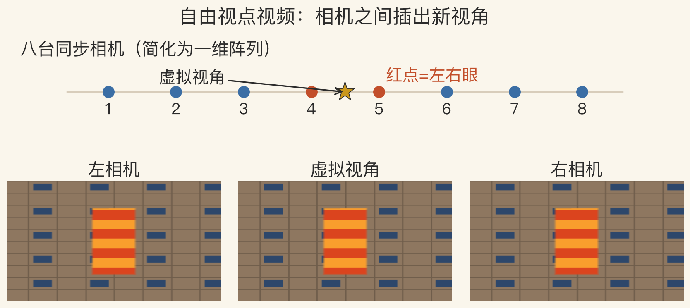
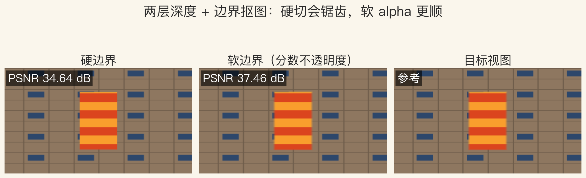
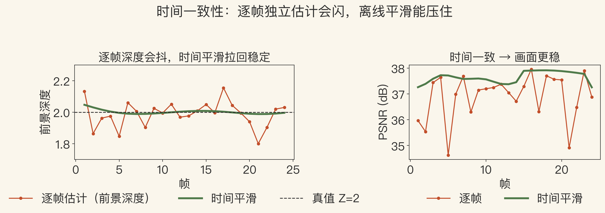

开场 · 空间视频
观众能不能自己选视角
- 3D 电影十几年，观众仍坐固定位置。
- 自由视点视频用多台相机同时拍。
- 观众在相机之间选视角。
- 本集用 8 台合成相机做演示。
依据：原书第 893–895 页
本集边界
合成一维阵列
不采集真实视频
不是完整 VR 系统
三个基本问题
深度、插值、时间一致
- 立体匹配：算出每个像素有多远。
- 视图插值：画出新机位看到的画面。
- 时间一致：相邻帧的深度不能乱跳。
- 三件事缺一件，画面就会出错。
依据：原书第 893 页
两个必要组件
立体匹配 + 视图插值
深度或代理要时间一致
否则画面会闪烁
早期系统 · 全局代理
先重建整体几何，再画新视角
- Virtualized Reality 等系统用全局几何。
- 代理可以是表面，也可以是体积。
- scene flow 记录表面元的三维运动。
- 新视角可信，但每帧重建很重。
依据：原书第 893 页
代表系统
Virtualized Reality
Immersive Video
Image-Based Visual Hulls
Zitnick · 两层深度
一幅图配两层深度
- 前景一层，背景一层。
- 边界像素是两层按比例混合。
- 单层深度容易把边缘切坏。
- 系统用 8 台同步相机采集。
依据：原书第 893 页
两层的好处
比全局网格轻
能处理遮挡边界
两层可分开压缩传输
实验一 · 相机阵列
相机之间插出新视角
- 8 台相机排成一维阵列。
- 红点是左右眼，中间是虚拟视角。
- 前景 Z=2、背景 Z=6，两层视差不同。
- 本实验只做一维平移。
依据：本集实验；原书第 893 页

八相机一维阵列与左/虚拟/右三视角｜程序生成，未用教材或论文原图
渲染管线
条带、alpha、z-buffer
- 深度不连续处，背景沿前景后方延伸。
- 颜色从邻图没被挡住的地方估计。
- 边界像素用分数不透明度合成。
- 两幅结果按 z-buffer 合并。
依据：原书第 894 页
四步
分层：前后景分开
抠图：估分数 alpha
合成：前景叠背景
比较：z-buffer 定前后
实验二 · 边界抠图
硬切出锯齿，软 alpha 更顺
- 硬边界只有 0 或 1。
- 软边界按覆盖率混合。
- PSNR：硬边界 34.64 分贝。
- 软边界 37.46 分贝，边缘误差降 96.8%。
依据：本集实验

硬边界 / 软边界 / 目标，PSNR 34.64 vs 37.46｜程序生成，未用教材或论文原图
VR 与自由度
ODS 只转头，6DoF 能走动
- Jump 用 16 台 GoPro 排成 28 厘米环。
- 离线拼成一对全向立体 ODS 视频。
- ODS 不支持头部倾斜和平移。
- 6DoF 可在有界体积内移动。
依据：原书第 895 页
自由度
ODS：原地转头
6DoF：有界体积内移动
自由度越多，采集越贵
实验三 · 时间一致
逐帧会抖，平滑后更稳
- 24 帧前景深度逐帧估计会抖。
- 深度标准差 0.100，平滑后 0.030。
- 闪烁指标 0.00060 降到 0.00004。
- 平均 PSNR 36.89 升到 37.64 分贝。
依据：本集实验

24 帧深度抖动 vs 时间平滑；闪烁 0.00060→0.00004｜程序生成，未用教材或论文原图
6DoF · 体积捕捉
自由移动要付代价
- 6DoF 需要离线多视图立体。
- 生成支撑自由移动的三维代理。
- 镜头朝外拍演员，叫体积表演捕捉。
- 有界体积、离线、多相机都是代价。
依据：原书第 895 页
两条路线
朝内：观众在场景里
朝外：观众围着演员
都要多视角与时间一致
AI 视频 · 少相机
相机越少，越靠先验
- 多数系统要定制的多相机阵列。
- 也可以用手持视频或一台手机。
- 相机少，没拍到的视角靠算法补。
- 深度网络可能把没拍到的东西编错。
依据：原书第 895 页
收束 · 下一集
阵列、两层、时间一致
- 立体匹配加视图插值，相机之间插视角。
- 两层深度、边界抠图、z-buffer 修边缘。
- 时间一致和 VR 自由度决定体验。
- 下一集：第 13–14 章收官。
依据：原书第 893–895 页